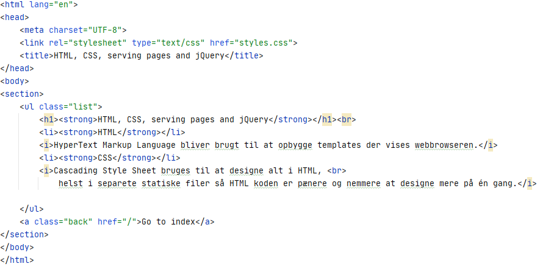
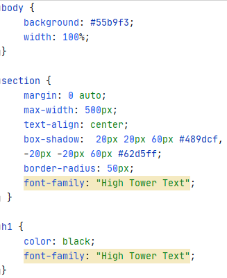

HTML, CSS, serving pages and jQuery
- HTML
HyperText Markup Language bliver brugt til at opbygge templates der vises webbrowseren.

- CSS
Cascading Style Sheet bruges til at designe alt i HTML,
helst i separete statiske filer så HTML koden er pænere og nemmere at designe mere på én gang.

Go to index